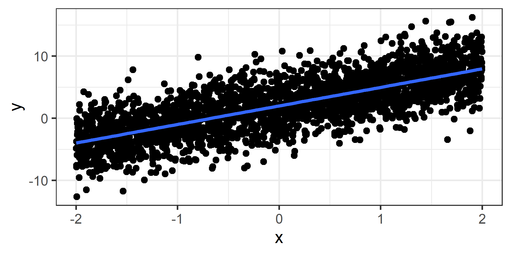
Data 308: Lecture 4a
Simple Linear Regression - Quantifying uncertainty
CSUCI - Dr. Catalina Medina
Understanding the variation in our estimates
Theoretical population regression line
We said our theoretical model is \[Y_i = \beta_0 + \beta_1 X_i + \epsilon_i.\]
It is theoretical because we are saying if we had all of the data for our population, a census instead of a sample, it would be the best linear approximation for the relationship between \(X\) and \(Y\).
Realistically we will almost never have a census, so \(\beta_0\) and \(\beta_1\) are unknown in practice.
Simulations
I will simulate multiple studies so we can explore how our results can differ!
Simulation: population data
Simulated data for a population of 2500 individuals.
- randomly generate \(x\)’s (fake explanatory variable).
- randomly generate \(\epsilon\)’s (random noise with \(E[\epsilon_i] = 0\) for all \(i=1,...n\)).
- calculate \(y\)’s with \(y_i = 2 + 3 x_i + \epsilon_i\).
Simulation: population data
Truth: \(y_i = 2 + 3 x_i + \epsilon_i\)

Next we will pretend we are different researchers collecting a sample of 50 observations each from this population and fitting a simple linear regression model.
Let’s see how different our results could be!
Simulation: Sample 1
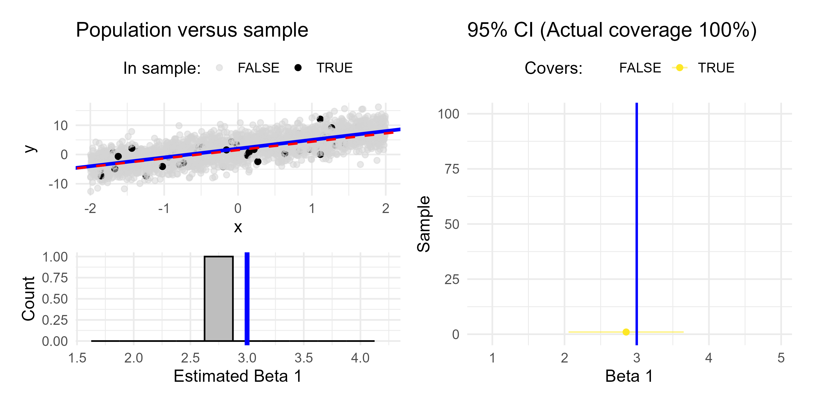
Simulation: Sample 2
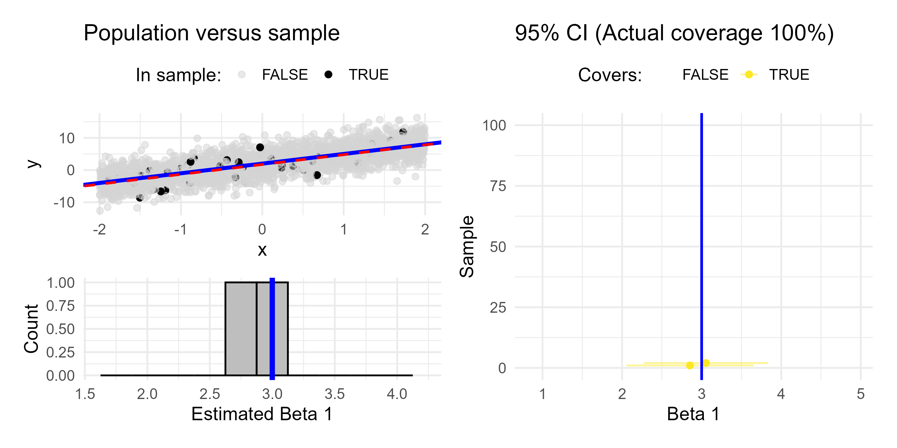
Simulation: Sample 3
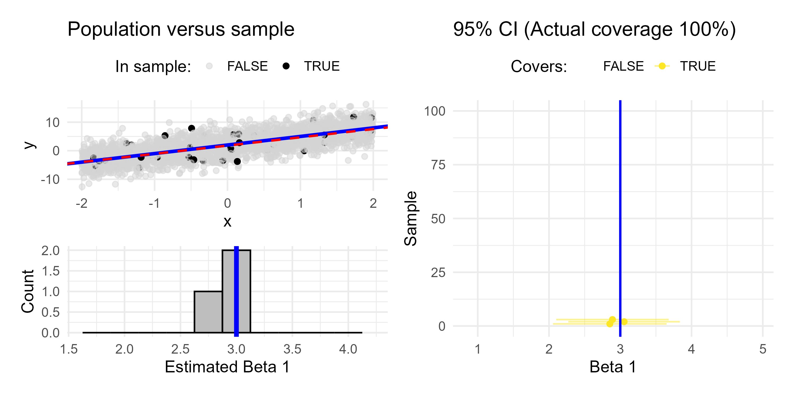
Simulation: Sample 4
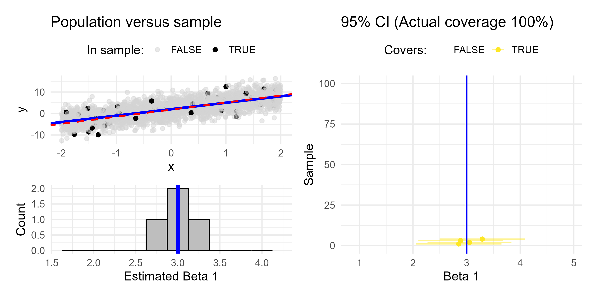
Simulation: Sample 5
Simulation: Sample 10
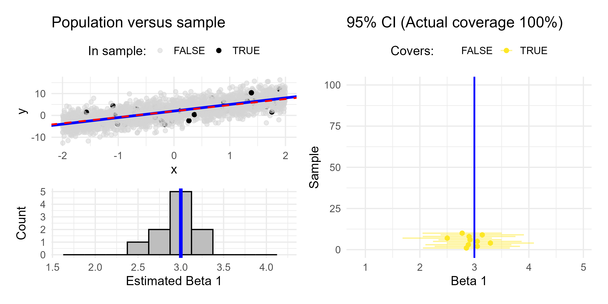
Simulation: Sample 30
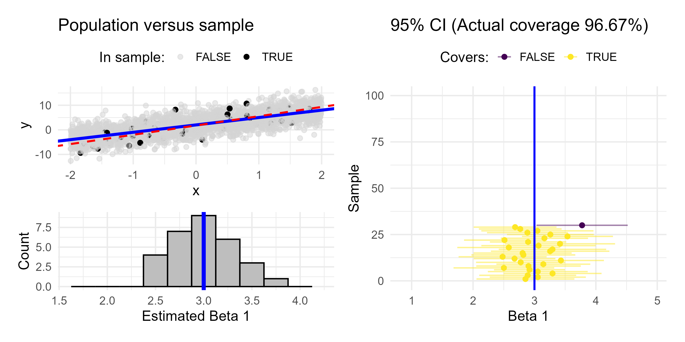
Simulation: Sample 50
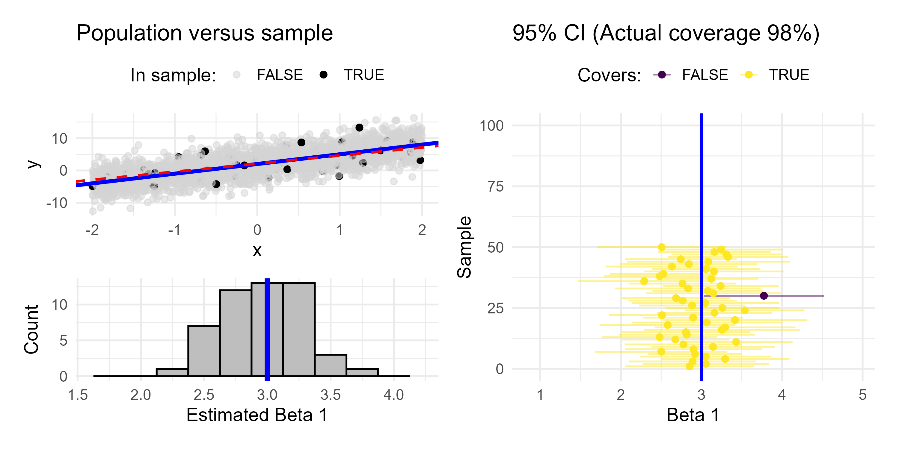
Simulation: Sample 100
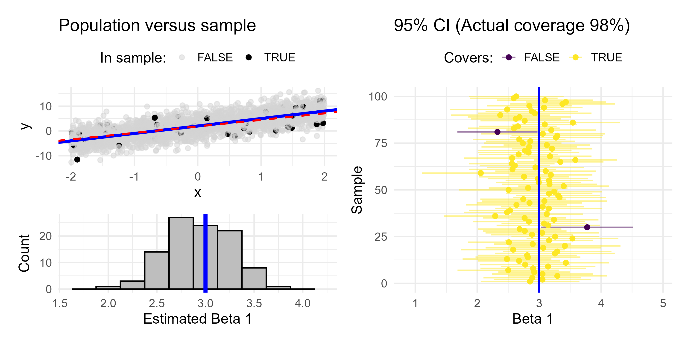
Simulation: Sample 250
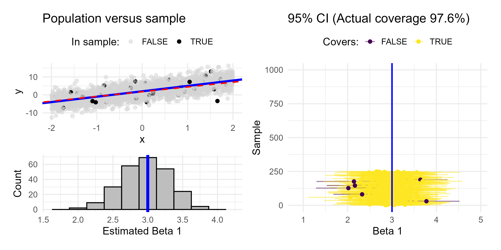
Simulation: Sample 500
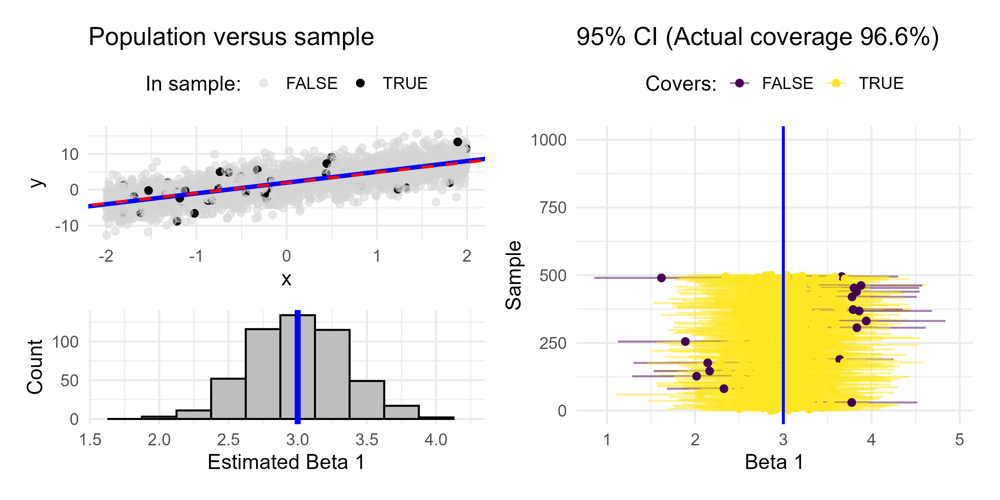
Simulation: Sample 750
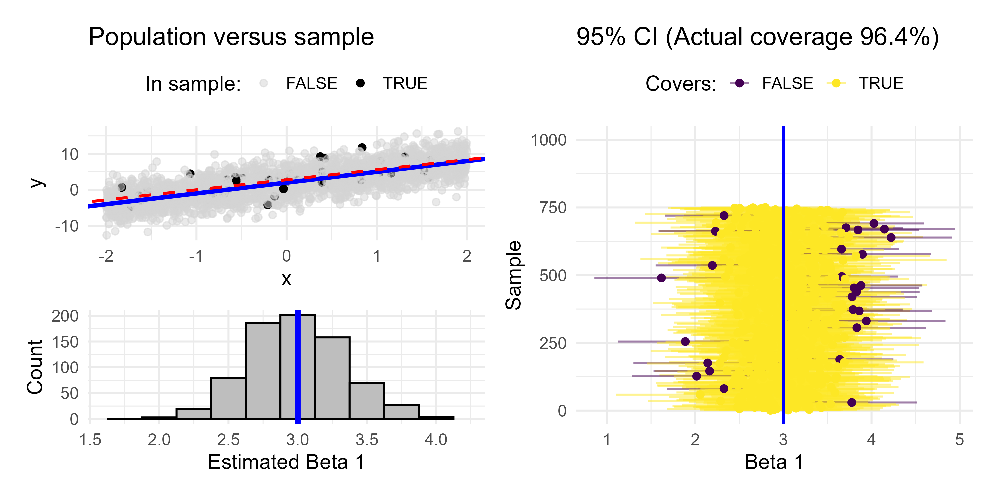
Simulation: Sample 1000
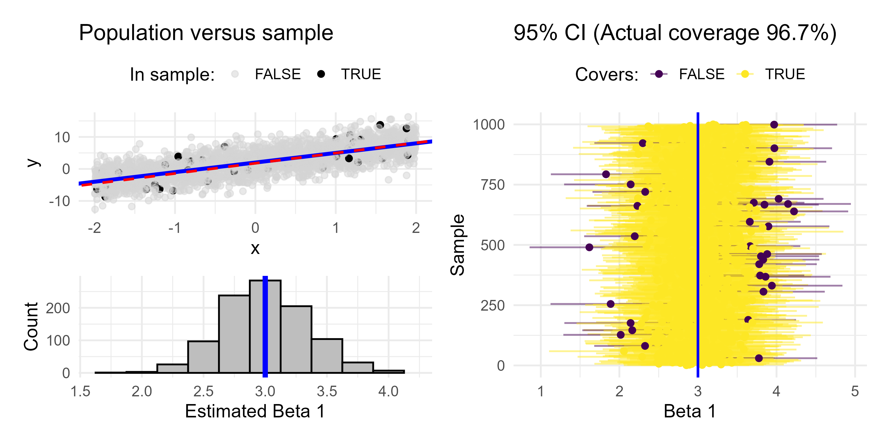
Takeaways
- different studies can get different results (i.e., different \(\hat{\beta}_0\) & \(\hat{\beta}_1\))
- those different estimates should be centered around the true \(\beta_0\) and \(\beta_1\)
- we can quantify a range of plausible values
Note I only showed the results for \(\beta_1\), but the same holds true for \(\beta_0\)!
Unbiased estimators
What we just saw was the sampling distribution of \(\hat{\beta}_1\).
The least squares estimators \(\hat{\beta}_0\) and \(\hat{\beta}_1\) from many random samples will tend towards the true parameters \(\beta_0\) and \(\beta_1\).
\(\hat{\beta}_0\) and \(\hat{\beta}_1\) are unbiased estimators for \(\beta_0\) and \(\beta_1\)! \(E[\hat{\beta}_0] = \beta_0\) and \(E[\hat{\beta}_1] = \beta_1\)
BUT we don’t know if \(\hat{\beta}_0 = \beta_0\) and \(\hat{\beta}_1 = \beta_1\)!
Understanding variability with a single sample
In practice we typically only have one sample and the estimates from a single sample may be fairly different from the true parameters by chance.
This is why we should use uncertainty estimates when using our estimators!
Confidence Intervals
Confidence level \(\neq\) probability
The confidence interval is the long-term proportion of confidence intervals that will capture the true parameter (either \(\beta_0\) or \(\beta_1\))
Confidence interval formula
We can use our point estimates \(\hat{\beta}_0\) and \(\hat{\beta}_1\) along with our standard error estimates \(SE(\hat{\beta}_0)\) and \(SE(\hat{\beta}_1)\) to provide confidence intervals
\[\hat{\beta}_0 \pm \text{Margin of error} = \hat{\beta}_0 \pm t^* SE(\hat{\beta}_0)\]
\[\hat{\beta}_1 \pm \text{Margin of error} = \hat{\beta}_1 \pm t^* SE(\hat{\beta}_1)\]
- \(t^*\) is a multiplier that adjusts for confidence level
Standard error of least squares estimates
\[SE(\hat{\beta}_0) = \sqrt{\sigma^2 \left(\frac{1}{n} + \frac{\bar{x}^2}{\sum_{i=1}^{n} (x_i - \bar{x})^2}\right)}\] \[SE(\hat{\beta}_1) = \sqrt{\frac{\sigma^2}{\sum_{i=1}^{n} (x_i - \bar{x})^2}}\]
summary()of your linear model will display standard error
Computing confidence intervals in practice
The confint() function will computer 95% confidence intervals (industry standard) by default
Other confidence levels
We can specify other confidence levels
5 % 95 %
(Intercept) -3737.52149 -3370.33908
height 26.35345 27.96161 10 % 90 %
(Intercept) -3696.94543 -3410.9151
height 26.53116 27.7839 25 % 75 %
(Intercept) -3629.18495 -3478.67561
height 26.82793 27.48713Interpreting confidence intervals
2.5 % 97.5 %
26.19922 28.11584 97.5 %
0.958308 Interpretation in context (as interval): A 1 cm increase in height of elephants is associated with an higher mass of 27.2 between 26.2 kg to 28.1 kg, with 95% confidence.
Interpretation in context (as margin of error): A 1 cm increase in height of elephants is associated with an higher mass of 27.2 plus or minus 1 kg, with 95% confidence.
Takeaways
- \(\hat{\beta_0}\) and \(\hat{\beta}_1\) are unbiased estimators of \(\beta_0\) and \(\beta_1\)
- Confidence intervals:
- definition
- increase in confidence level = ?
- increase in sample size = ?
- how to obtain using
r - margin of error
Use this applet to explore what happens to the width of the confidence interval as you change confidence level and sample size (separately).
Lecture progress
This is where we stopped in class. We will finished this lecture next class!
Prediction intervals
People commonly confuse confidence and prediction intervals. When making a prediction, our uncertainty depends on who we are predicting for
- confidence intervals are for average response
- prediction intervals are for response of a particular individual
Either way, we should avoid predicting for values outside the range of what we have observed (extrapolation)!
Calculating and interpreting intervals for predictions
fit lwr upr
1 1877.576 1846.741 1908.41 fit lwr upr
1 1877.576 1277.849 2477.302For elephants 200 cm tall, we predict their mean weight to be 1877.6 kg, between 1846.7 and 1908.4 kg, with 95% confidence.
For an elephant 200 cm tall, we predict its weight to be 1877.6 kg, between 1277.8 and 2477.3 kg, with 95% confidence.